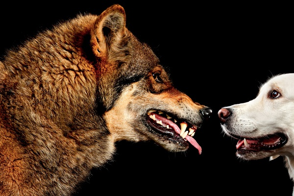

What's a dog breed?

People have been breeding dogs since prehistoric times. The earliest dog breeders
used wolves to create domestic dogs. From the beginning, humans purposefully bred
dogs to perform various tasks. Hunting, guarding, and herding are thought to be
among the earliest jobs eagerly performed by the animal destined to be called “man’s
best friend.”
For thousands of years, humans bred dogs toward the physical and
mental traits best suited for the work expected of them. The sleek Greyhound types
bred to chase fleet-footed prey, and the huge mastiff types used as guard dogs and
warriors, are two ancient examples of dogs bred for specific jobs.
As humans
became more sophisticated, so did their dogs. Eventually, there emerged specific
breeds of dogs, custom-bred to suit the breeders’ local needs and circumstances.
The Greyhound, for instance, was the foundation type for the immense Irish Wolfhound
and the dainty Italian Greyhound. All three have a distinct family resemblance, but
you’d never mistake one for another.